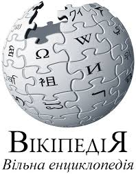

|

Головна сторінка Поточні події Поточні події Нові редагування Нові сторінки Випадкова стаття Участь Портал спільноти Кнайпа |
HTMLМатеріал з Вікіпедії — вільної енциклопедії. HTML (англ. HyperText Markup Language — Мова розмітки гіпертекстових документів) — стандартна мова розмітки веб-сторінок в Інтернеті. Більшість веб-сторінок створюються за допомогою мови HTML (або XHTML). Документ HTML оброблюється браузером та відтворюється на екрані у звичному для людини вигляді. HTML є похідною мовою від SGML, успадкувавши від неї визначення типу документа та ідеологію структурної розмітки тексту. Попри те, що HTML — штучна комп'ютерна мова, вона не є мовою програмування HTML разом із каскадними таблицями стилів та вбудованими скриптами — це три основні технології побудови веб-сторінок.[1] HTML впроваджує засоби для:
|
1980 року фізик Тім Бернерс-Лі, який на той час був співробітником CERN, запропонував і прототипував систему ENQUIRE, яка мала полегшити сумісне користування документами для дослідників CERN. 1989 року Бернерс-Лі запропонував впровадити на базі Internet гіпертекстову систему документів.[2] Вже наприкінці 1990 року він розробив HTML і написав браузер та серверне програмне забезпечення для запропонованої системи. У цьому ж році Тім Бернерс-Лі та Роберт Кайо, інженер інформаційних систем CERN, подали спільну заявку на фінансування проекту, проте цей проект не був офіційно прийнятий CERN. Наприкінці 1991 року Тім Бернерс-Лі опублікував в Інтернеті перший загальнодоступний опис мови розмітки HTML, відомий як документ «HTML-теги» (HTML Tags).[3] В ньому були описані 20 елементів первісної, відносно простої схеми розмітки HTML. За винятком тегу гіперпосилання, який був жорстко підпорядкований внутрішньому SGML-формату документації CERN. Тринадцять із тих елементів ще й досі існують у HTML4.[4] Бернерс-Лі розглядав HTML як похідну мову від SGML, і в середині 1993 року Спеціальна Комісія Інтернет-розробок (IETF) офіційно визначила її такою, опублікувавши першу специфікацію HTML: «Hypertext Markup Language (HTML)» Internet-проект, авторами якої були Тім Бернерс-Лі та Ден Конолі. Ця специфікація вже містила визначення типу документа, яке чітко зазначало граматику HTML.[5] Проект втратив силу через 6 місяців, проте був відомий за офіційне визнання в ньому створеного для браузера NCSA Mosaic тега додавання зображень, не розділяючи філософію IETF щодо заснування стандартів на успішних прототипах.[6] Так само пізніше в 1993 році в конкуруючому Інтернет-проекті Дейва Раджетта «HTML+ (Hypertext Markup Format)», було запропоновано стандартизувати вже запроваджені браузерами сенсаційні на той час можливості, такі як таблиці та перші інтерактивні форми. На початку 1994 року, після того, як проекти «HTML» і «HTML+» втратили свою силу, IETF створив Робочу групу HTML (HTML Working Group). 1995 року Робоча група HTML завершила роботу над документом «HTML 2.0» (опублікований як RFC із номером 1866), першою специфікацією, що мала бути використана як базовий стандарт для подальших вдосконалень HTML.[6] Версія 2.0 окреслювала чіткі відмінності між новим виданням специфікації та попередніми проектами. Подальші розробки під заступництвом IETF зіштовхнулися з конкуруючими інтересами. З 1996 року специфікації HTML затверджувались Консорціумом W3C, враховуючи доповнення до розмітки, що впроваджувалися компаніями-розробниками браузерів. Тим не менш, у 2000 році HTML стала міжнародним стандартом (ISO/IEC 15445:2000).